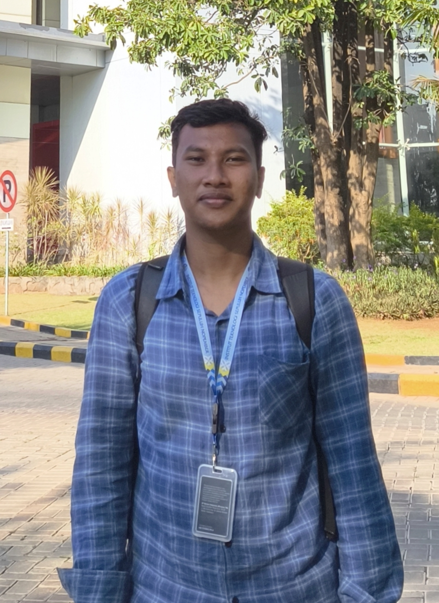
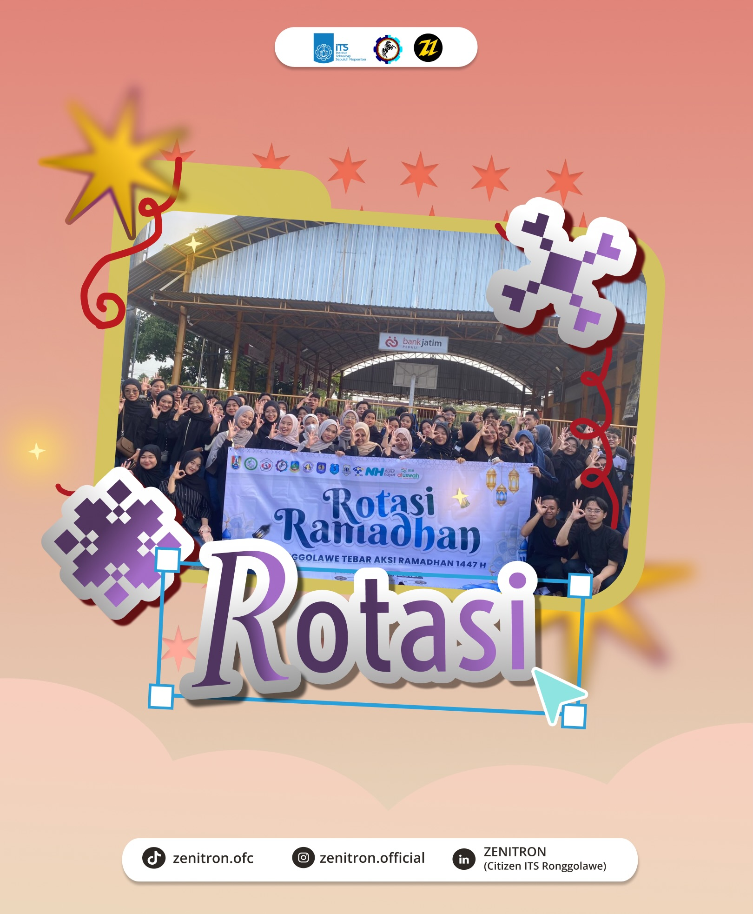
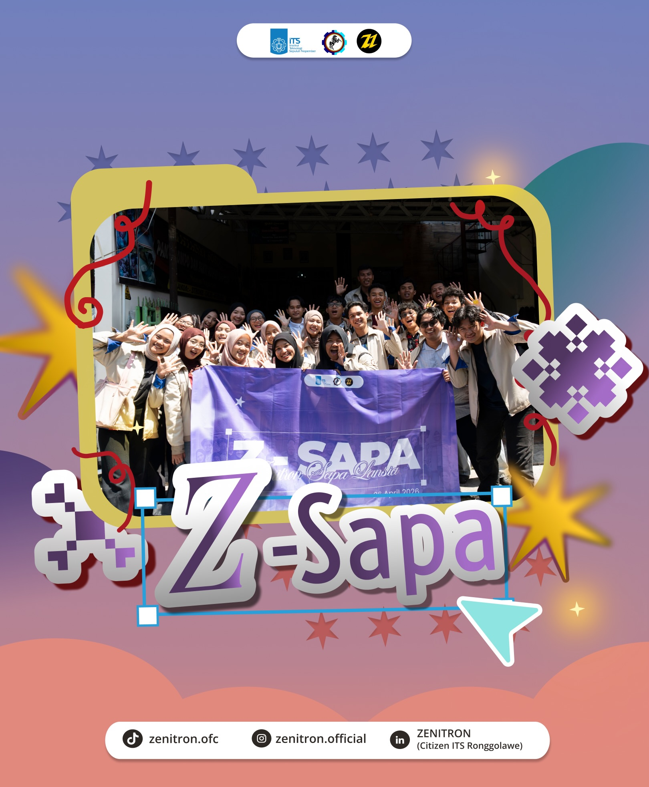
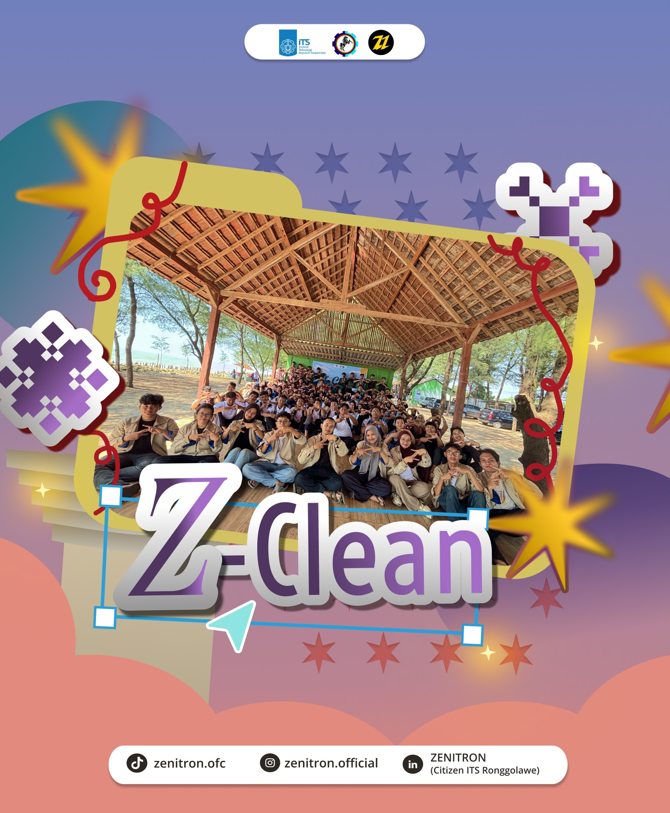
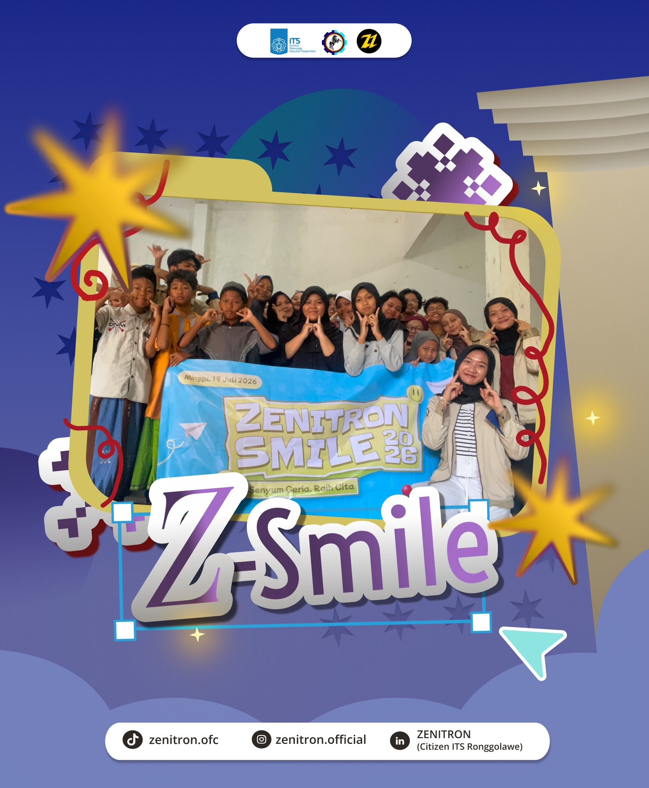

Hi, sayaHilmy Fausta.
Saya senang membangun sistem yang saling ngobrol satu sama lain — dari notifikasi jaringan otomatis sampai bot WhatsApp — dan mengemasnya rapi lewat Docker.

Tentang Saya
Mahasiswa Teknik Informatika, Institut Teknologi Sepuluh Nopember. Selama magang di SIG, saya membangun sistem notifikasi otomatis untuk monitoring jaringan dan tiket helpdesk, sekaligus web checklist preventive maintenance aset — semuanya dijembatani lewat n8n, WAHA, dan sedikit bantuan AI lokal. Di luar itu saya juga aktif di organisasi sosial kemahasiswaan dan senang mengoprek proyek personal sendiri.
Skill & Tools
Pengalaman & Organisasi
Unit of Tech, Asset & Site Operations — SIG Pabrik Tuban
Membangun sistem notifikasi WA otomatis untuk monitoring jaringan (LibreNMS) dan tiket helpdesk (ManageEngine), serta web checklist preventive maintenance aset.
Wakil Ketua Departemen Sosial Masyarakat — Zenitron
Mengkoordinasi 4 program kerja sepanjang periode kepengurusan.

Rotasi Ramadhan
Penggalangan dana & bagi takjil bersama Aliansi Mahasiswa Tuban, kolaborasi Forda & BEM se-Tuban.

Z-Sapa
Kunjungan dan interaksi lintas generasi bersama lansia di Yayasan Karya Luhur Bina Asih.

Z-Clean
Bersih-bersih pantai & tanam bibit mangrove di Pantai Mangrove Tuban.

Z-Smile
Pembelajaran dan pendampingan kreatif untuk anak-anak panti asuhan.
Project

WA Bot Personal
Bot WhatsApp serba bisa: tanya AI, ubah foto jadi stiker, main game bareng teman, sampai catatan to-do — jalan di Azure lewat n8n, WAHA, dan Groq API.
Lihat detail →
SIGBOT
Notifikasi WA otomatis untuk tiket ManageEngine ServiceDesk, dengan saran AI lokal.
Lihat detail →
Notifikasi Jaringan LibreNMS
Sistem notifikasi WA saat switch/jaringan down, dibangun dari nol termasuk instalasi LibreNMS-nya.
Lihat detail →
Web PM SIG
Checklist preventive maintenance untuk aset PC, laptop, printer, dan switch kantor.
Lihat detail →
Buku Angkatan
Web sederhana yang terhubung ke Google Sheets & Slides untuk pengerjaan buku angkatan bareng-bareng.
Lihat detail →